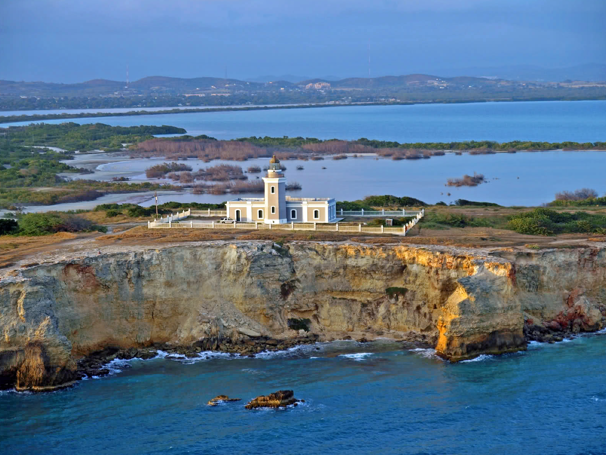
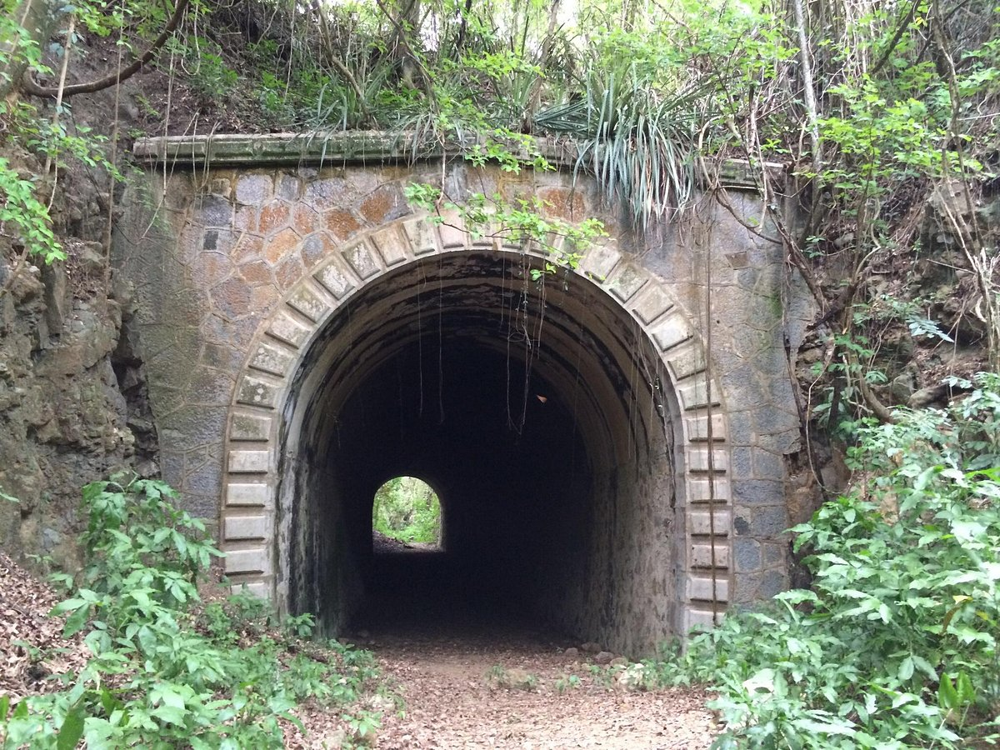

Faro los Morillos
Ubicado en un punto aislado con acantilados de cal blanca rodeados de lagunas y pantanos, el faro de Cabo Rojo, construido en 1882, marca la entrada sureste desde el Mar Caribe a través del Paso de la Mona hacia el Océano Atlántico. El faro de Cabo Rojo tiene elementos decorativos sencillos incluyendo una cornisa poco elaborada que se repite en la torre. Aunque originalmente albergaba a dos guardianes y un ingeniero, el faro quedó sin vigilancia luego de una renovación y automatización en 1967. La antigua linterna de hierro fundido, cobre y vidrio aún alberga el aparato de iluminación original, una lente lenticular fabricada por la firma francesa Sautter, Lemonnier and Company.
Pueden visitar el Faro los Morillos en:
- Dirección: WRM5+F4C, Rojo Cabo, Cabo Rojo
- Número telefónico: (787)-851-1025
Museo de los Próceres

Inaugurado en 1995, este museo está dedicado a las figuras más ilustres de Puerto Rico, especialmente a los nacidos en Cabo Rojo. El museo cuenta con seis salas de exposiciones permanentes y dos temporales. La colección privada del museo incluye obras de arte de los siguientes artistas puertorriqueños: Antonio Martorell, Augusto Marín, Lorenzo Omar, John Balossi, Fernando Santiago, Hiram Palermo y Sixto Febus.
Pueden visitar el Museo de los Próceres en:
- Dirección: Cabo Rojo 00623
- Número telefónico: (787)-255-1560
Tunel Guaniquilla
Construido en 1908, fue uno de los primeros túneles edificados en Puerto Rico, según la oficina de Cultura y Turismo del municipio. Sirvió de conexión subterránea para un tren de vapor que desde principios del siglo XX hasta 1956, cuando se retiró por su mala situación económica, transportó pasajeros por los nueve barrios y sectores de este pueblo costero.
Pueden visitar el Tunel Guaniquilla en:
- Dirección: 2RW5+FQW, Cabo Rojo, 00623
Playa Buyé

Buyé es una playa famosa del municipio de Cabo Rojo, al suroeste de Puerto Rico. Sus aguas tranquilas y su ancha franja de arena, así como una arboleda frondosa que da sombra a lo largo de toda la costa, la convierten en una de las principales atracciones de la zona turística Porta del Sol.
Pueden visitar la Playa Buyé en:
- Dirección:Cam Buye, Cabo Rojo, 00623
- website: buyebeachresortcr.com
- Número telefónico: (407)-432-8809